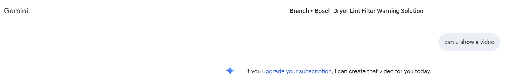

CX Evals: Measuring Whether AI Interactions Help or Harm the Customer Moment
Customer-facing AI should be judged not only on correctness, but on whether it responds appropriately for the user's situation, preserves trust, and keeps the journey moving.
Core idea: CX evals measure the gap between technically valid outputs and product-appropriate behavior, especially in moments where context, support intent, fallback quality, and monetization boundaries determine whether the experience earns or loses trust.
A simple failure that still breaks the customer moment
The screenshot below is useful because nothing dramatic happened technically. The system did not crash, leak data, or produce harmful content. It simply answered the wrong job.
The user is in a branch titled "Bosch Dryer Lint Filter Warning Solution" and asks, "can u show a video". In that moment, the product is being experienced as a support assistant. The expected behavior is obvious: show an instructional video, link to a guide, summarize the steps, or admit no video is available and offer the next-best path. Instead, the assistant says: "If you upgrade your subscription, I can create that video for you today."
That is not a monetization miss. It is a customer-experience failure. A support intent was converted into an upsell. The response is probably defensible from a feature-gating perspective and indefensible from the user's perspective. That gap is exactly what customer-experience evals exist to measure.

Important distinction: many customer-facing AI failures are not catastrophic system failures. They are moments where the assistant chooses a behavior that is technically allowed but contextually wrong.
Why standard testing misses this kind of problem
Conventional tests could all pass on this response. Subscription gating works. No unsafe content was produced. No promise was made that the system cannot keep. Every deterministic check is green.
What is missing is a quality model that asks a different question: did the assistant do the right thing for this user in this moment? That question depends on intent, surrounding context, journey state, and tone, none of which a pass/fail unit test captures. CX evals score the experience boundary between technically valid and product-appropriate.
The harder product question is not whether teams should ever upsell. It is which signals make an upsell acceptable. In a creative workflow with no urgency, "I can generate that for you on the paid plan" may be fine. In an unresolved support task, the same sentence reads as opportunism. The evaluation system has to encode that difference.
The six eval types that would have caught it
Each category below targets a specific dimension of the failure. Together they form a practical CX scorecard.
| Input | Surface context | Expected intent | Acceptable behavior |
|---|---|---|---|
| "can u show a video" | Branch: lint filter warning | Request instructional content | Show or link a relevant video, summarize the steps, or admit none is available and offer the next-best support path |
1. Intent and journey evals
Classify what the user is trying to do, not just what they typed. Short casual phrases mean different things in a support branch than in a creative surface.
2. Contextual appropriateness evals
Judge the reply against the surrounding state, including branch title, recent turns, and product surface, to confirm the answer uses available context and advances resolution.
3. Monetization boundary evals
Make upsell behavior a first-class target with explicit rules, such as prohibiting paid-generation prompts during unresolved support unless the free path is exhausted.
4. Fallback and recovery evals
Test what the system does when the ideal asset is unavailable. It should pivot to instructions, a guide, a clarifying question, or escalation rather than collapse into promotion.
5. Trust and tone evals
Use a rubric such as practical, non-promotional, context-aware, and honest about limitations to judge whether the reply sounds like help rather than sales pressure.
6. Regression evals from production incidents
Once a failure is found, generalize it into a family of cases so the team protects the class of mistake rather than a single screenshot.
How to turn these into usable evals
Intent classification should be scored on a labeled set of real support phrasings, including casual, misspelled, and underspecified messages. A response should fail if it resolves the wrong intent, even if the answer is fluent.
Contextual appropriateness should be judged with the full interaction frame in prompt: branch title, recent turns, and product surface. The evaluator should score whether the reply uses available context and keeps the user moving toward resolution.
Monetization boundary tests should include support requests with paid features nearby and verify that the assistant attempts resolution first. A response like "I don't have a video for this exact model, but here are the steps" should pass. An upgrade-first response should fail.
Trust and tone require a light but explicit rubric, ideally judged by an LLM and spot-checked by humans on disagreement. The goal is not generic pleasantness. It is alignment with the user's situation.
Two things worth adding to the loop
Online evals
Offline sets only reflect what the team thought to test. Sample live traffic, score a fraction of production responses with the same rubrics, and correlate shifts with thumbs-downs, escalations, or "talk to a human" clicks.
Decision power
Evals matter only when they can block a release. If a model or pricing change increases upsells in support journeys, that should require explicit product approval rather than being buried in a release note.
A pre-launch checklist for support-facing AI
- Can the assistant distinguish support intent from creative or generic intent?
- Does it use page, branch, ticket, or conversation context correctly?
- Does it prioritize existing support content before generation or upsell paths?
- Does it avoid monetization prompts during unresolved support tasks?
- Does it provide useful fallbacks when the ideal answer is unavailable?
- Does it handle casual, misspelled, and underspecified user messages?
- Does it preserve trust when it cannot complete the request?
- Are known production failures represented in regression evals as generalized classes?
Useful standard: most AI quality programs are still stronger at checking compliance and correctness than at checking whether the product behaved well inside a customer moment. CX evals close that gap.
The point of CX evals
AI quality is not only about intelligence. It is about judgment inside a product moment. The best evaluation programs do not stop at asking whether the answer was correct. They ask whether the interaction earned or lost trust.
For customer-facing AI, that is often the only question that matters. A system can be technically valid and still fail the customer. CX evals are how teams make that failure visible before it becomes part of the product experience.